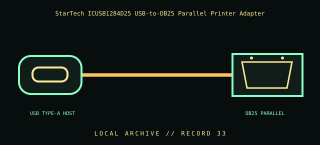

[ INDIVIDUAL COMPONENT // CABLES & ADAPTERS ]
StarTech ICUSB1284D25 USB-to-DB25 Parallel Printer Adapter
StarTech.com ICUSB1284D25 6 ft USB 2.0 Type-A male to DB25 female parallel adapter cable. This entry identifies the documented model and does not claim that visually similar products share its pinout, protocol, capability, or host compatibility.

COMPATIBILITY WARNING: Verify the exact product model, host/device role, signal protocol, electrical requirements, and manual before connection. Connector fit alone does not prove compatibility.
Specifications
| Catalog subcategory | Legacy printer and parallel cables |
|---|---|
| Catalog identity | StarTech.com ICUSB1284D25 6 ft USB 2.0 Type-A male to DB25 female parallel adapter cable |
| Verified protocol / model information | StarTech identifies a 6 ft (about 1.8 m) USB-to-DB25 parallel adapter cable. USB host signaling is converted to a parallel-printer interface by active electronics; the DB25 output is not a serial RS-232 port. |
| Connector ends | USB TYPE-A HOST → DB25 PARALLEL; diagram is schematic, not a pinout map. |
Physical & electrical compatibility
Requires a compatible USB host/driver and printer that accepts the adapter’s parallel interface. A DB25 connector is used for different electrical interfaces; never assume this parallel output is RS-232 or IEEE-1284 host capability identical to a native port. Check supported printer functions; legacy dongles, scanners, and bidirectional devices may not work.
Archival & handling notes
Keep model, driver, and known-supported printer with the adapter. Inspect USB plug and DB25 contacts, and do not force a parallel plug into a serial device. Record whether the printer supported bidirectional/status functions.
Record provenance, condition, label photographs, exact full part number/revision, host system, and any test method/result. Preserve packaging and source documents with the cable when available.
Manufacturer & standards references
- StarTech — ICUSB1284D25 USB-to-DB25 parallel adapterManufacturer model, connector genders, and 6 ft adapter-cable identity.
- IEEE — IEEE 1284 parallel interface standardStandards reference for parallel printer interface; adapter implementation and driver support vary.
Manufacturer documentation applies to the cited model; standards references describe the protocol family. Where product revisions or device support vary, the exact manufacturer manual and host documentation take precedence.